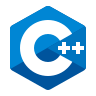
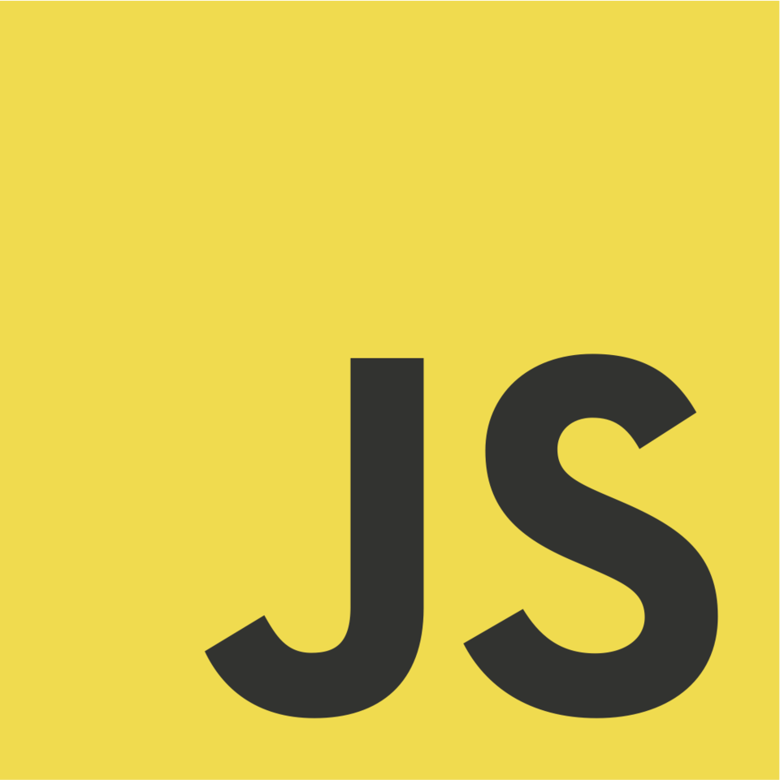

Sobre mí
Soy estudiante de Ingeniería en Computación en FING-UDELAR, con sólida formación en lógica de programación y una marcada capacidad de adaptación a diversos lenguajes y entornos tecnológicos. Poseo experiencia en el diseño y desarrollo de soluciones orientadas a sistemas, así como en la creación de sitios web completos.
Me desenvuelvo con fluidez en los siguientes lenguajes y tecnologías:
-

C++
-
HTML
-
 CSS
CSS
-

JavaScript
-
 PHP
PHP
-
 MySQL
MySQL
Proyectos destacados
Módulo TSocio
Implementación modular en C++ para la gestión eficiente de socios, con operaciones O(1) en el peor caso gracias a estructuras con tope fijo.
El módulo encapsula datos personales y géneros favoritos, con manejo de memoria y una interfaz clara para agregar y consultar socios.
Socio 12345678: Massimo García
Fecha de alta: 4/6/2000
Géneros favoritos: 12 7 3 9
Ejemplo de salida en consola utilizando la función imprimirTSocio.
juegoDT (en proceso)
Simulador web de gestión deportiva con enfoque entretenido y técnico. El usuario puede registrarse, iniciar sesión, administrar su equipo, comprar y vender jugadores, y visualizar su perfil con información personal y financiera. El sistema incluye manejo de sesiones, validación de formularios, interacción con base de datos MySQL, y lógica modular distribuida en múltiples scripts PHP.
- Frontend: HTML, CSS, JavaScript
- Backend: PHP orientado a módulos, con control de flujo y seguridad básica
- Base de datos: MySQL, con operaciones CRUD para usuarios y jugadores
- Funcionalidades: registro, login, tienda de jugadores, perfil personal, sistema de dinero dinámico